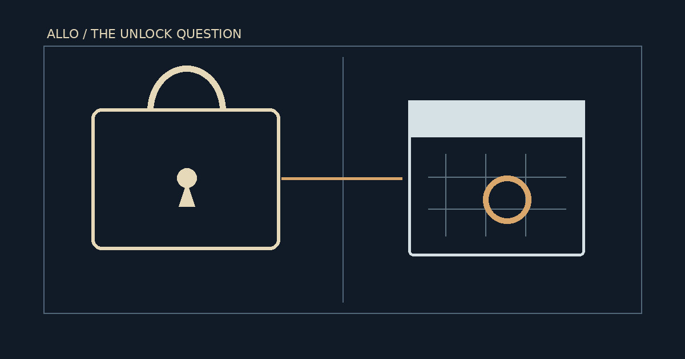

Allora’s Insider Unlock: Why the Vesting Clock Is Not a Sell Order
A 160-million-token cliff, conflicting supply classifications, and thin spot liquidity expose the gap between scheduled vesting and actual market selling.
Research reference date: · Historical investigation

Two days before a widely anticipated insider token unlock, Allora presented a puzzle: a public vesting calendar pointed to November 11, 2026, while a native-chain supply dashboard appeared to have already counted a substantial portion of investor and team allocations as unlocked. Neither observation, on its own, proves that insiders could sell—much less that they did.
The distinction matters because three events are routinely collapsed into one: a vesting restriction expires, tokens become available to a recipient, and tokens reach a market as sell orders. They can occur at different times, in different amounts, or not at all. My central concern is not whether the scheduled allocation is large. It is whether market commentary can establish which of those events has actually happened.
The cliff is real. Its market meaning is conditional.
Allora's published tokenomics allocates 31.05% of a one-billion-token maximum supply to early backers and 17.5% to core contributors. The schedule describes a 12-month cliff releasing 33% of each allocation, followed by linear vesting of the remainder over 24 months. Applied literally, that first cliff represents 102.465 million ALLO for backers and 57.75 million for contributors: 160.215 million ALLO combined. The scheduled date was November 11, 2026. Allora Foundation tokenomics.
At a CoinGecko reference price of $0.148352, observed on , that quantity carried a notional value of approximately $23.77 million. CoinGecko reported roughly $3.57 million in 24-hour trading volume, making the cliff notional about 6.65 times that reported daily turnover. Those are comparisons of scale, not forecasts of execution, price impact, or liquidation.
There is also a denominator problem. CoinGecko reported approximately 420.88 million ALLO circulating, whereas a contemporaneous CoinMarketCap figure was approximately 200.5 million. Against the former, the scheduled cliff is about 38.1% of reported circulation; against the latter, about 79.9%. Different circulating-supply definitions make those ratios non-interchangeable. A dramatic percentage is not informative unless the supply definition is clear.
What the native-chain accounting appears to say
A native-chain explorer, Argus, reported 12 months unlocked while displaying 207 million investor ALLO and 116.67 million team ALLO as still locked. Compared with the original investor allocation of 310.5 million and team allocation of 175 million, those reported balances imply roughly 161.83 million ALLO no longer classified as locked.
That is close to—but not identical with—the 160.215 million derived from the stated 33% cliff. The approximately 1.62-million-token difference is consistent with an implementation using one-third rather than exactly 33% of the initial allocations. This is a mathematical explanation worth examining, not evidence that a particular wallet received the difference.
| Cohort | Initial allocation | Reported locked | Implied no longer locked |
|---|---|---|---|
| Early backers | 310.50 | 207.00 | 103.50 |
| Core contributors | 175.00 | 116.67 | 58.33 |
| Combined | 485.50 | 323.67 | 161.83 |
The Allora mint module's published field definitions distinguish months_already_unlocked from updated_months_unlocked, and identify separate investor and team locked-supply fields. That distinction matters. A calculated next-period value, a persisted accounting counter, a claimable balance, and a transferable wallet balance are not the same thing. The available snapshot does not establish which transition had occurred by November 9. Allora technical documentation.
Meanwhile, third-party unlock calendars continued to identify November 11 as the relevant event. That disagreement is not a reason to choose whichever number makes the stronger headline. It is a reason to separate schedule, accounting, and distribution.
Thin order books are a risk, not a price target
The liquidity evidence is more concrete, though narrower. An OKX ALLO-USDT spot order-book snapshot at showed a best bid of $0.14828 and best ask of $0.14844. Within 1% of the midpoint, displayed bids totaled only about $2,978; within 5%, approximately $7,383. This is one venue, one instant, and displayed—not guaranteed executable—liquidity.
| Band | Bids | Asks |
|---|---|---|
| ±1% | $2,978 | $3,490 |
| ±2% | $5,089 | $6,296 |
| ±5% | $7,383 | $8,891 |
| ±10% | $8,603 | $11,502 |
It would be a mistake to divide the entire unlock notional by that single order-book snapshot and declare an inevitable collapse. Resting orders cancel, refill, and migrate; traders use other venues, time-sliced execution, and off-book liquidity. Still, the contrast makes a legitimate point: even a modest fraction of the scheduled cliff could be consequential if concentrated into a short selling window.
A scenario model, not a probability machine
To make the scale tangible, the calculator below assumes a fraction of the 160.215 million ALLO scheduled cliff is sold at the November 9 reference price. It compares the resulting hypothetical notional with the same date's reported 24-hour market volume multiplied by the selected number of days. It does not estimate slippage, price declines, market participation, or the probability of insider selling.
Hypothetical sale-pressure calculator
Hypothetical tokens sold16.02M ALLO
Reference-price notional$2.38M
Multiple of reported volume over window0.22×
Fixed assumptions: 160,215,000 ALLO cliff; $0.148352 per ALLO; $3,571,769 reported 24-hour volume, all referenced to November 9, 2026. No assumption of stable future volume is warranted.
| Fraction | ALLO sold | Notional | 3-day volume multiple |
|---|---|---|---|
| 5% | 8.01M | $1.19M | 0.11× |
| 10% | 16.02M | $2.38M | 0.22× |
| 25% | 40.05M | $5.94M | 0.55× |
| 50% | 80.11M | $11.88M | 1.11× |
| 100% | 160.22M | $23.77M | 2.22× |
The strongest bearish and bullish cases
The bearish case is straightforward: a substantial quantity becomes transferable, some recipients seek liquidity, and concentrated selling overwhelms the depth available at prevailing prices. A thin spot book and a large cliff make that scenario plausible. They do not establish the recipients' intentions or the size and timing of any sales.
The bullish—or at least less bearish—case deserves equal attention. Recipients may hold, stake, delay claiming, or transact outside visible spot books. The market may have discounted the event in advance. On Allora, validator unbonding has a documented 21-day delay, but that rule cannot simply be imposed on every insider allocation or every staking mechanism. Allora staking parameters.
A third explanation is easy to overlook: ALLO could fall during the event window for reasons that have little to do with insider distributions. Broader crypto volatility, risk appetite, venue-specific flows, and ordinary market fragmentation can all confound a simple before-and-after comparison. Past unlock-associated drawdowns are not a causal model of this particular cliff.
What would actually settle the question?
For me, the decisive evidence would be a time-aligned record of the native mint-module counters immediately before and after the vesting transition, followed by attributable distributions to recipient addresses and observable movements into known exchange custody. Even exchange deposits would be evidence of potential sell-side availability, not proof of completed sales. A defensible price-impact estimate would then require matched-market controls, venue-level liquidity and an explicit model of execution costs.
Until those pieces line up, the strongest conclusion is narrower than the loudest forecast: Allora faced a substantial scheduled insider supply event amid relatively thin observed spot liquidity, while the relationship between its vesting calendar and native-chain accounting remained unresolved as of November 9, 2026.
The larger lesson extends beyond one token. Unlock calendars tell us when supply may change status. They do not tell us who controls it, when it becomes transferable, or whether it is offered for sale. I would rather leave a price target unwritten than disguise that difference with false precision.
Source notes
Primary tokenomics and staking definitions: Allora Foundation and Allora documentation. Native supply snapshot: Argus. Market reference observations: CoinGecko ALLO market data and OKX ALLO-USDT spot book, November 9, 2026. All numerical snapshots in this article are historical and should not be read as current quotations.